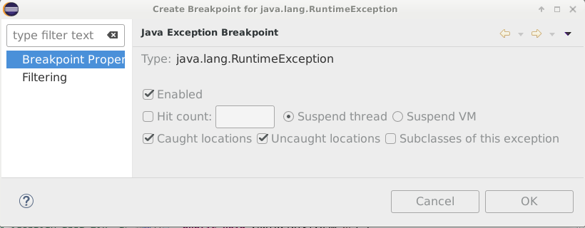

sprint=object.collections
task=t1
So far, all references that we have used have been
typed with the class of the object it refers to.
So for instance,
assuming a class Point,
a reference to a point object would be declared like this:
Jusqu'à présent, toutes les références que nous avons utilisé
étaient typées avec la classe de l'objets qu'elles référencaient.
Ainsi, en faisant l'hypothèse que nous avons une classe
Point, une référence sur un
objet point serait déclaré comme ceci:
Point pt;
So the developer and the compiler knows that the variable
pt refers to an object and
that object is an instance of the class
Point.
Similarly, since arrays in Java are objects, a reference
to an array of points would be declared like this:
Avec cette déclaration, le développeur et le compilateur
savent que la variable
pt référence un objet de la classe
Point.
De façon similaire, puisque les tableaux de points
sont des objets en Java, une référence sur un tableau
de points serait déclarée comme ceci:
Point array[];
Again, the developer and the compiler would know
that the variable
array refers to an object and
that object is an array. Furthermore, they both know that
the array contains references, which are references to
objects that are instances of the class
Point.
Encore une fois, le compilateur et le développeur
savent que la variable
array référence
un objet et que cet objet est un tableau.
Ils savent que ce tableau contient des références
vers des instances de la classe
Point.
But how would you declare an array that should contain a
mix of points and rectangles? We would do it like
this:
Mais comment feriez vous pour déclarer un tableau
qui devrait contenir un mélange de points et de
rectangles? Vous le feriez comme ceci:
Object array[];
The class Object
is a very special class; it describes any object.
While the class Point
describes objects that are points and the class
Rectangle describes objects
that are rectangles, the class
Object describes
what is common to all objects in Java.
La classe Object
est une classe très spéciale, elle décrit ce qui est
common à tous les objets en Java. Alors que la
classe Point
décrit des objets qui sont des points et la classe
Rectangle
décrit des objets qui sont des rectangles, la classe
Object decrit
ce qui est commun à tous les objets.
So in Java, the following code snippet is a
valid snippet of code:
Ainsi, en Java, le code suivant est valid:
Point p1 = new Point(); // create a point object
Object obj = p1; // alias p1 as an object
Point p2 = (Point)obj; // cast back the object to a point.
The three variables
(p1,
p2, and
obj)
are all aliases of the same object. That object
is an instance of the
class Point.
Through the variable
obj, our
point object is seen as a generic object.
Any instance of any class can be seen
as a generic object. Hence the statement:
Les trois variables
(p1,
p2 et
obj)
sont toutes des aliases du même objet.
Cet objet est une instance de la classe
Point.
Au travers de la variable
obj, notre
objet qui est un point est aussi vue comme
un objet générique. Tout objet peut être
vu ainsi.
Object obj = p1; // alias p1 as an object
However, the other way around requires a cast statement,
like the one below:
Cependant, le fait de voir un objet générique comme
un objet spécifique demande un cast spécifique,
comme ceci:
Point p2 = (Point)obj; // cast back the object to a point.
Since not all objects are point objects, the Java
compiler requires us to make it explicit that
we want to view a generic object
(Object)
as a more specific object
(Point).
But the runtime will verify that the cast
is possible when executing the code.
A cast may fail at runtime if the casted
object is not an instance of the requested
class.
Puisque tous les objets ne sont pas des points,
le compilateur Java nous demande d'être explicite
et de dire que l'on veut voir cet objet particulier,
vu comme une instance de la classe
Object
comme un object plus spécifique, instance de la classe
Point.
Mais ce cast sera vérifiée à
l'exécution par la plateforme Java. En effet,
un cast peut échouer si l'objet n'est pas
une instance de la classe spécifiée dans le cast.
For instance, the following code snippet will
raise an exception
(ClassCastException)
at the third line because the variable
obj refers to a
point object, not a line object.
En effet, le code suivant va lever une exception
(ClassCastException)
à la troisième ligne car la variable
obj réference un
objet point et pas un objet ligne.
Point p = new Point(); // create a point object
Object obj = p; // alias p as an object
Line l = (Line)obj; // cast the object to a line
Sometimes, you do not want to take the risk of
ClassCastException being thrown.
So if you want to check if an object
is indeed an instance of a given class, you can
use:
Si vous vouliez vérifier qu'un objet est bien une instance
d'une classe donnée, vous pouvez écrire:
if (obj instanceof Point) { // is the object an instance of the class Point?
Point p2 = (Point)obj; // yes, so do the cast
...
}
Note for C programmers: casts exist
in both C and Java, looking fairly similar.
There is one very important difference though.
A cast in the C programming language is
only intended for the compiler. It will always
succeed, both at compile time and at runtime.
So in C, if the cast is an invalid cast,
the cast will not fail at runtime, but the
program will most likely fail sooner or later.
In Java, the cast will fail when attempted and
will raise an exception that can be caught.
Furthermore, there is no mechanism in C to
check if a cast is valid.
Hey Object! Who are you?
Now we have the ability to have an array of objects,
containing objects that are instances of different
classes. This is great, but how do we get back
the real classes of those objects?
Nous avons maintenant la possibilité d'avoir un
tableau d'objets, des objets qui sont des instances
de différentes classes. C'est super, mais comment
savoir pour un objet donné quelle est sa classe?
So keeping with our example of an array of points
and rectangles, how do we know if an element of the array
is a point or a rectangle?
The answer is easy, just ask the object.
Remember that all objects know their class.
Revenant à notre exemple avec des points et des rectangles,
comment savoir si un élément du tableau est un point
ou un rectangle? Comme souvent en programmation orientée-objet,
la réponse est de demander à l'objet.
Point pt = new Point();
Object[] array = new Object[10];
array[0] = pt;
Object o = array[0];
Class cls = o.getClass();
assert(cls == pt.getClass());
Notice there is a point object and a class object.
The point object is the object referenced
by the variable pt.
You should be very familiar with this by now.
Thus, the class object is the object referenced by the
variable cls, nothing
special there, a class object is a regular object,
like any other object.
Notez qu'il y a un objet point et un objet classe.
L'objet point est l'objet référencé par la variable
pt.
Vous devriez être tout à fait familier avec cela
désormais. Aussi, l'objet classe est l'objet référencé
par la variable cls, rien
de particulier ici, un objet classe est un objet
comme les autres.
However, we need to discuss a few points
about class objects. First, you do not create
class objects, they are created automatically
by the Java runtime when loading classes from
the classpath given to the Java runtime.
Remember, the classpath is where to find the
class files, the result of compiling Java sources.
Nous devons discuter cependant de quelques points
à propos des objets classes. Tout d'abord, vous ne
créez pas les objets classes, ils sont créés automatiquement
par la plateforme Java lorsqu'elle charge les classes
depuis le classpath. Vous vous rappelez? Le classpath
est le chemin où trouver les classfiles, qui sont le
résultat de la compilation des sources de vos classes.
The class object knows about everything there is to know
about the class it represents at runtime. It knows the name of the
class. It knows the fields and methods. But let's not
get carried away, fields and methods are another story.
For now, we are good with only the name. So, given
an object, you could check that it is a point, like this:
L'objet classe connait tout ce qu'il y a à savoir sur
la classe qu'il représente pendant l'exécution.
Il en connait le nom, les champs et les méthodes.
Mais n'allons pas trop vite, parlons du nom.
Ainsi, si vous avez un objet, vous pouvez savoir
le nom de sa classe:
boolean isPoint(Object o) {
Class cls = o.getClass();
String name = cls.getName();
return name.equals("object.collections.step1.Point");
}
This method works well and makes sense if you have
the class name as a Java string. But it is not the
most efficient since we are doing a string comparison,
which requires to scan the strings and compare each
character.
There is another way to do it with the class object,
using the fact that there is only one unique class
object per class. So we can write our code like this:
Cette approache marche bien si vous avez le nom
de la classe comme une chaîne de caractères dans
votre programme. Mais ce n'est pas la méthode la
plus efficace et la plus simple. L'autre façon
est la suivante, s'appuyant sur le fait qu'il n'y
a qu'un seul objet classe pour une classe donnée:
boolean isPoint(Object o) {
Class cls = Point.class;
return cls == o.getClass();
}
Pretty cool right?
See how easy it is to ask the Java Platform for the
class object corresponding to a known class in your code.
Furthermore, no matter how many times you ask for that class
object, you will always get back the same class object.
For instance, if you have a
class Point,
the Java Runtime will create one and only class object
for that class. All requests for "Point.class" will
return that class object, always the same object.
C'est cool non?
Vous voyez à quel point c'est facile de demander à
la plateforme Java qu'elle est l'objet classe qui
représente une classe. De plus, la plateforme Java
va vous donner toujours le même objet classe,
même si vous le demandez plusieurs fois pour la
même classe. En fait, si vous avez une classe
Point, la plateforme
Java va charger votre classfile une seule fois et
donc ne créer qu'un seul objet classe qui la représente.
Cool, but expensive. Be aware that the construct "Point.class" is a dynamic
lookup for the class, it is not a cheap lookup in terms of
performance. But before we show you how to do it efficiently,
please look at the code in the
package object.collections.step1.
The code is essentially what we just discussed.
Bonus: you will learn a few new tricks along the way, like how to
use a random number generator in Java, define constants,
and use them in switch
statements. Have fun.
Bon, sympa, mais cher. En effet, sachez que la construction
"Point.class" est une recherche dynamique sur le nom de la classe
et cette recherche peut être couteuse en temps. Mais avant de
vous montrer comment le faire efficacement, regarder le
code dans le paquet Java
object.collections.step1.
Le code est essentiellement ce que nous venons de discuter.
Bonus: vous allez apprendre quelques petits trucs
sympas, comme apprendre à utiliser un générateur de nombre
aléatoire, définir des constantes, et les utiliser dans
un switch. Amusez vous bien.
However, we left a bug in there, an easy one to find and fix.
So go ahead, read, understand, and debug the code in
package object.collections.step1.
An important advice though before we begin.
Upon the first execution, you will see that the execution
raises an Error exception.
Something like this:
Cependant, nous avons laissé un bug dans ce code, un bug
qu'il est facile de trouver et de corriger, si on lit et
on comprends le code. Alors, c'est parti, lisez, trouvez,
et corrigez le bug dans le paquet
object.collections.step1.
Un conseil important cependant, avant que vous ne
commenciez à lire. Faite une première exécution du code,
vous verrez que l'exécution lève une exception
Error, comme cela:
Oops... You didn't fix the bug yet.
java.lang.RuntimeException: array[0]: unknown --> Line
at object.collections.step1.CollectionsStep1.verify(CollectionsStep1.java:149)
at object.collections.step1.CollectionsStep1.main(CollectionsStep1.java:180)
Let us remind you how to exploit this output, after all, a little
repetition never hurts mastering skills.
This is a lot of information, with underlined hyperlinks.
Notice the output tells you that an exception was raised,
an instance of the
class RuntimeException.
It tells you also where the exception was raised,
in this case at the line 149 in the source
for the
class CollectionStep1.
Notice that it gives you the entire call stack as
well. In this case, the call stack is limited to
one more location: the line 180 in the source
for the
class CollectionStep1.
Laissez nous vous rappeler comment bien exploiter
cette sortie en erreur, après tout, se répéter un peu ne nuit pas
à la maîtrise des connaissances.
Il y a en effet beaucoup d'information, avec des
hyperliens. Vous voyez que l'exception levée
est de la classe RuntimeException.
Vous voyez aussi que l'exception a été levée
à la ligne 149 dans le source de la classe
CollectionStep1.
Notez que vous avez toute la trace des appels
qui ont mené à l'exécution de cette ligne 149.
Dans cette exécution, l'appel vient de la ligne
180 dans le source de la classe
CollectionStep1.
You can click on the underlined links to the different
locations in the different sources, Eclipse will automatically
navigate you there. This is great to see where the exception
was raised. Sometimes, it is all you need to understand
what happened. Sometimes, it is not sufficient, you wish
you could have suspended the execution right at the time
the exception was raised. Why? To look at the values of
local variables, arguments, or go up the call stack to
look at variables and arguments there. Maybe you need
to browse some objects to understand the cause of the exception.
Vous pouvez cliquer sur les hyperliens, comme dans un navigateur
Web, et Eclipse va automatiquement naviguer vers la ligne
correspondante dans le source de la bonne classe. Des fois,
c'est tout ce dont vous avez besoin pour comprendre le problème.
Mais dès fois, ce n'est pas suffisant,
vous avez besoin du context lors de la levée
de l'exception, pour pouvoir regarder les variables locales,
les arguments, ou naviguer dans les objets.
The good news is that it is possible. Just click in the Eclipse
console on the hyperlink
java.lang.RuntimeException
and you will get the following dialog window:

It offers you the possibility to setup an exception breakpoint.
What that means is that the execution will now suspend automatically
when the exception java.lang.RuntimeException is raised.
If you clicked OK, you can see the added breakpoint in the
Breakpoints view in the Debug perspective:
Ce dialog vous offre la possibilité de placer un point d'arrêt
sur la levée d'exception. L'exécution s'arretera à chaque fois
que cette exception sera levée, exactement à la ligne ou est levée
l'exception.
Notice in the icon toolbar of the Breakpoints view,
the icon
that enables you to add breakpoints on any exception, before
they are raised by an execution. We suggest that you always
have a breakpoint on the exception
NullPointerException.
Notez aussi l'icon
dans la barre d'outils de la vue Breakpoints.
Elle vous permet de rajouter à tout moment un point d'arrêt sur
exception. Nous vous suggérons de toujours avoir un tel point
d'arrêt sur l'exception
NullPointerException.
OK then, happy hunting.
When you have fix the bug, let's check that you did it right.
A bit lost? Well, read the code, it is not that hard to
understand. The method
build creates
an array with a mix of objects.
The method
identify scans
the array and identifies for each element in the
array what it is---its kind: POINT, LINE, RECTANGLE,
or UNKNOWN (would not be a good sign).
And then the method
verify verifies
that the method
identify did its
job correctly.
We can tell you that the method
verify verifies
is correct, so the bug is in the method
verify.
Still having difficulties, debugging is still a challenge for you,
please ask for help.
Bug removed. Great!
Casting
Now that you got yourself accustomed to the code, we can show
you another way you can test if an object is an instance of a
certain class. This approach is efficient if the cast succeeds
most of the time, because the approach is costly when the
cast fails. That you like it or not, this kind of
coding is used from times to times, so it is a good thing
to know it.
Maintenant que vous avez lu et compris le code, nous pouvons
vous montrer une autre façon de faire. Elle est efficace
si le cast réussit le plus souvent, car elle est coûteuse
lorsque le cast échoue. Qu'elle vous plaise ou non,
elle est utilisée et il est bon que vous la connaissiez.
boolean isPoint(Object o) {
try {
Point p = (Point) o;
return true;
} catch (ClassCastException ex) {
return false;
}
}
The idea of the code above is to cast the object into
a point and see if it succeeds. It will only succeed
if the object is indeed a point, that is, an instance
of the class
Point.
So if the cast succeeds, the execution continues in
sequence and returns true.
If the cast fails, the Java Platform raises a
class-cast exception, an instance of the
class ClassCastException.
In this case, the catch
block returns false.
L'idée du code ci-dessus est de projecter l'objet
comme un point et de voir si cela réussit. Le cast
ne fonctionnera que si l'objet est réellement un point,
c'est à dire une instance de la classe
Point.
Si le cast réussit, l'exécution continue en
séquence et retourne true.
Sinon, la plateforme Java lève une exception
ClassCastException
qui est attrapée par le bloc
catch
qui retourne false.
Using this approach, the code would look like this:
static int[] identify(Object array[]) {
int[] kinds = new int[array.length];
for (int i = 0; i < array.length; i++) {
Object o = array[i];
try {
Point p;
p = (Point) o;
kinds[i] = POINT;
continue;
} catch (ClassCastException ex) {
}
try {
Line l;
l = (Line) o;
kinds[i] = LINE;
continue;
} catch (ClassCastException ex) {
}
try {
Rectangle r;
r = (Rectangle) o;
kinds[i] = RECTANGLE;
continue;
} catch (ClassCastException ex) {
}
throw new RuntimeException("Unrecognized object");
}
return kinds;
}
We want to draw your attention on a few points:
-
Note that you can have several try-catch statements in
a sequence. There is nothing wrong with this.
Different exceptions may occur at different
lines, calling for different try-catch statements.
Notez que vous avez plusieurs try-catch qui se suivent,
il n'y a rien d'incorrect en cela. Des exceptions différentes
peuvent être levées à des lignes différentes de votre programme
et vous pouvez souhaiter utiliser differentes construction try-catch.
-
Note the use of continue
in the code. Since failed casts are expensive, once
a cast has succeeded, we do not want to fall through
and still attempt the other casts, just for them to fail.
Notez l'usage de continue
dans le code. Puisque il est coûteux de faire des casts
qui échouent, on ne veut pas continuer en séquence une
fois qu'un cast a réussi. D'où l'usage de
continue qui force
à faire le tour suivant de la boucle.
-
Because we used continue,
if none of the casts succeeded, we can directly throw
our runtime exception (RuntimeException).
Puisque nous utilisons
continue, lorsqu'un cast
réussit, nous pouvons lever directement l'exception
RuntimeException.
The Golden Way --- InstanceOf
All the above methods to check if an object is an instance of
a certain class do work and are useful to know in different
coding circumstances. But they are not the canonical pattern
because they are somewhat expensive (slow).
In fact, Java has specific and efficient support for checking if an object
is an instance of a class.
Toutes les méthodes décrites ci-dessous pour tester si un
objet est une instance d'une certaine classe marchent et
sont utiles à connaitre. Mais elles ne sont pas l'approche
canonique. En fait, Java a un support spécifique et efficace
pour tester si un objet est une instance d'une classe.
boolean isPoint(Object o) {
return (o instanceof Point);
}
As you can see, the syntax is really clean and easy to read.
Using this technique, rewrite the code of the method
identify on the class
CollectionsStep1.
Using the instanceof
operator is definitely the way to do it, it is easy and
it is efficient.
Comme vous pouvez le voir, la syntaxe est réellement très propre
et simple à lire. Nous vous demandons donc de réécrire,
avec l'usage de instanceof,
la méthode
identify,
toujours sur la classe
CollectionsStep1.
Utiliser l'opérateur instanceof
est sans aucun doute la bonne manière de faire.
Let's recheck your code.
Still having difficulties,
the use of the instanceof
operator is still unclear, please ask for help.
The method identify
seems to work just fine.
You did it, so this is great. But let us share
with you how we would code this.
static int[] identify(Object array[]) {
int[] kinds = new int[array.length];
for (int i = 0; i < array.length; i++) {
Object o = array[i];
if (o instanceof Point) {
kinds[i] = POINT;
} else if (o instanceof Line) {
kinds[i] = LINE;
} else if (o instanceof Rectangle) {
kinds[i] = RECTANGLE;
} else
throw new RuntimeException("Unrecognized object");
}
return kinds;
}
That's all folks for this task. But before we move on,
please make sure
that you commit and push your work to our server.
This is how: